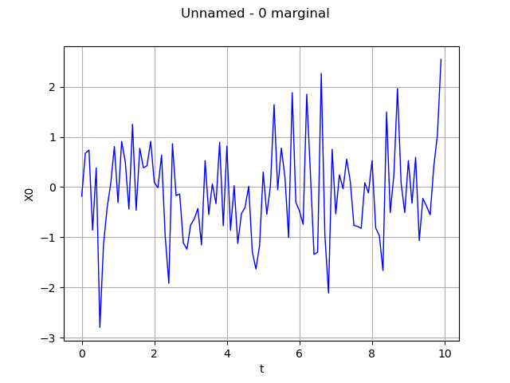
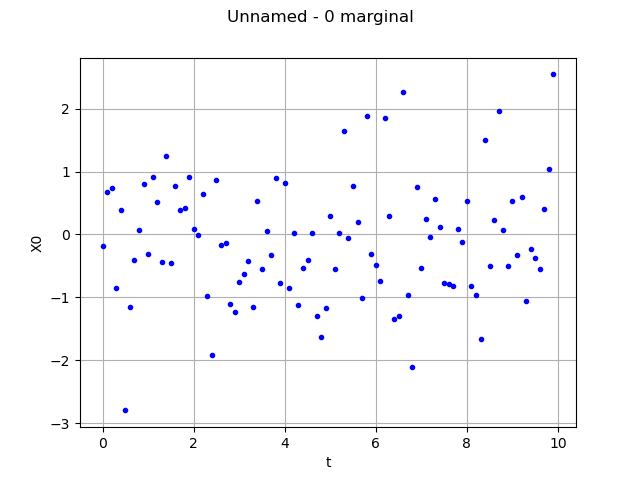

Note
Click here to download the full example code
Time series manipulation¶
The objective here is to create and manipulate a time series. A time series is a particular field where the mesh  1-d and regular, eg a time grid .
1-d and regular, eg a time grid .
It is possible to draw a time series, using interpolation between the values: see the use case on the Field.
A time series can be obtained as a realization of a multivariate stochastic process of dimension where is discretized according to the regular grid . The values of the time series are defined by:
A time series is stored in the TimeSeries object that stores the regular time grid and the associated values.
from __future__ import print_function
import openturns as ot
import openturns.viewer as viewer
from matplotlib import pylab as plt
import math as m
ot.Log.Show(ot.Log.NONE)
Create the RegularGrid
tMin = 0.
timeStep = 0.1
N = 100
myTimeGrid = ot.RegularGrid(tMin, timeStep, N)
Case 1: Create a time series from a time grid and values Care! The number of steps of the time grid must correspond to the size of the values
myValues = ot.Normal(3).getSample(myTimeGrid.getVertices().getSize())
myTimeSeries = ot.TimeSeries(myTimeGrid, myValues)
myTimeSeries
[ t X0 X1 X2 ]
0 : [ 0 -0.182484 -0.440356 1.13247 ]
1 : [ 0.1 0.674547 1.34247 1.39874 ]
2 : [ 0.2 0.736782 -0.252381 1.3757 ]
3 : [ 0.3 -0.858775 0.00109033 0.579508 ]
4 : [ 0.4 0.383663 0.494226 0.707441 ]
5 : [ 0.5 -2.79738 3.04752 -0.0763745 ]
6 : [ 0.6 -1.14715 2.57154 1.52295 ]
7 : [ 0.7 -0.412344 0.197543 -1.32056 ]
8 : [ 0.8 0.0784782 1.15086 0.357457 ]
9 : [ 0.9 0.80829 -0.846094 0.197997 ]
10 : [ 1 -0.309455 -0.798818 -1.49124 ]
11 : [ 1.1 0.908445 -0.572821 1.15664 ]
12 : [ 1.2 0.50848 -1.56675 -0.0885204 ]
13 : [ 1.3 -0.439673 -0.216443 0.992476 ]
14 : [ 1.4 1.24972 -0.0733184 1.40725 ]
15 : [ 1.5 -0.461717 1.11996 -1.24464 ]
16 : [ 1.6 0.773224 -0.531869 -0.52065 ]
17 : [ 1.7 0.383878 0.590867 0.971656 ]
18 : [ 1.8 0.42521 -0.679881 -0.224992 ]
19 : [ 1.9 0.911013 -0.0652468 -1.73899 ]
20 : [ 2 0.0937754 0.11441 0.44022 ]
21 : [ 2.1 -0.01304 -1.13674 0.638542 ]
22 : [ 2.2 0.637729 -0.495112 -0.512163 ]
23 : [ 2.3 -0.975287 -0.810021 0.330267 ]
24 : [ 2.4 -1.91617 0.0245578 0.862084 ]
25 : [ 2.5 0.863564 0.257896 0.263776 ]
26 : [ 2.6 -0.168931 -0.522402 0.468233 ]
27 : [ 2.7 -0.140062 1.35497 -0.597185 ]
28 : [ 2.8 -1.11299 -1.42881 2.20836 ]
29 : [ 2.9 -1.23704 -0.445937 0.762529 ]
30 : [ 3 -0.756441 0.394736 -0.89202 ]
31 : [ 3.1 -0.635901 -0.737606 -0.191263 ]
32 : [ 3.2 -0.427053 -0.299966 -1.87562 ]
33 : [ 3.3 -1.15349 0.631904 -0.255809 ]
34 : [ 3.4 0.527049 -0.525721 1.36335 ]
35 : [ 3.5 -0.549281 0.734446 0.517316 ]
36 : [ 3.6 0.0623652 -1.39255 -2.64948 ]
37 : [ 3.7 -0.330858 -1.40182 0.339849 ]
38 : [ 3.8 0.892018 0.769703 0.328253 ]
39 : [ 3.9 -0.772016 -0.333568 2.05861 ]
40 : [ 4 0.813765 0.70262 0.130501 ]
41 : [ 4.1 -0.859126 1.60644 -0.351036 ]
42 : [ 4.2 0.0271934 -1.44884 1.15448 ]
43 : [ 4.3 -1.12584 1.55685 -0.19887 ]
44 : [ 4.4 -0.529622 1.17651 0.293214 ]
45 : [ 4.5 -0.407357 0.346712 -1.03687 ]
46 : [ 4.6 0.015817 -0.676278 0.424196 ]
47 : [ 4.7 -1.28905 1.08282 -0.953553 ]
48 : [ 4.8 -1.63306 1.36541 0.164474 ]
49 : [ 4.9 -1.16748 -0.534041 -0.564179 ]
50 : [ 5 0.300872 1.68764 -0.119298 ]
51 : [ 5.1 -0.543738 -2.44822 0.252724 ]
52 : [ 5.2 0.0290843 -1.11237 -0.737089 ]
53 : [ 5.3 1.6428 -2.0151 1.18185 ]
54 : [ 5.4 -0.0548356 -0.134918 0.569179 ]
55 : [ 5.5 0.7776 0.266954 -1.28617 ]
56 : [ 5.6 0.192363 -0.632593 -0.197716 ]
57 : [ 5.7 -1.00735 0.503821 -0.888276 ]
58 : [ 5.8 1.88178 -0.789546 0.426544 ]
59 : [ 5.9 -0.30418 0.433553 1.7036 ]
60 : [ 6 -0.478431 -0.898794 -0.104475 ]
61 : [ 6.1 -0.744107 1.10736 -0.421768 ]
62 : [ 6.2 1.84934 0.907834 -0.400522 ]
63 : [ 6.3 0.287392 0.543246 -0.428477 ]
64 : [ 6.4 -1.34214 0.109366 -0.629774 ]
65 : [ 6.5 -1.29804 -1.05483 -0.790768 ]
66 : [ 6.6 2.26413 0.00432486 -0.208023 ]
67 : [ 6.7 -0.965814 -1.04571 0.800641 ]
68 : [ 6.8 -2.11142 -0.475061 0.664259 ]
69 : [ 6.9 0.752243 1.42432 1.53569 ]
70 : [ 7 -0.534013 -0.085785 0.128866 ]
71 : [ 7.1 0.24489 -0.797195 0.988479 ]
72 : [ 7.2 -0.0338217 0.695057 2.77684 ]
73 : [ 7.3 0.557462 0.441871 1.11801 ]
74 : [ 7.4 0.110938 -0.262389 0.341779 ]
75 : [ 7.5 -0.766122 -0.570663 0.718851 ]
76 : [ 7.6 -0.782492 0.0530888 0.469527 ]
77 : [ 7.7 -0.824322 0.0659858 1.3081 ]
78 : [ 7.8 0.0867897 0.226602 -1.13576 ]
79 : [ 7.9 -0.11632 0.506479 0.543716 ]
80 : [ 8 0.527622 -0.879927 -0.853346 ]
81 : [ 8.1 -0.812964 -0.388733 0.646043 ]
82 : [ 8.2 -0.968639 1.69371 0.772567 ]
83 : [ 8.3 -1.66345 1.85585 -1.34847 ]
84 : [ 8.4 1.4947 0.208781 1.15428 ]
85 : [ 8.5 -0.508857 0.471101 -1.04333 ]
86 : [ 8.6 0.225843 -0.159677 0.269437 ]
87 : [ 8.7 1.96162 -1.1784 -0.872668 ]
88 : [ 8.8 0.0748948 0.935867 1.68141 ]
89 : [ 8.9 -0.508926 1.74994 1.02931 ]
90 : [ 9 0.527057 -1.10613 -0.332096 ]
91 : [ 9.1 -0.320962 -1.78858 -0.662092 ]
92 : [ 9.2 0.593153 1.02311 -0.762216 ]
93 : [ 9.3 -1.06471 -1.74861 0.805991 ]
94 : [ 9.4 -0.225593 1.92683 -1.94564 ]
95 : [ 9.5 -0.379446 0.401309 1.17893 ]
96 : [ 9.6 -0.553239 -1.15422 -0.0443501 ]
97 : [ 9.7 0.407933 -1.3633 0.392107 ]
98 : [ 9.8 1.03737 0.624896 0.0248253 ]
99 : [ 9.9 2.54438 -0.59357 -0.849044 ]
Case 2: Get a time series from a Process
myProcess = ot.WhiteNoise(ot.Normal(3), myTimeGrid)
myTimeSeries2 = myProcess.getRealization()
myTimeSeries2
| t | X0 | X1 | X2 | |
|---|---|---|---|---|
| 0 | 0 | -0.8828219 | 0.4980987 | -1.355246 |
| 1 | 0.1 | -0.5372505 | 0.06518352 | 0.5361502 |
| 2 | 0.2 | -0.1752852 | 0.1363254 | 3.087135 |
| 3 | 0.3 | 0.2017424 | -0.9372854 | 0.8240501 |
| 4 | 0.4 | -0.5542514 | -2.939255 | -0.2608888 |
| 5 | 0.5 | -1.337974 | -0.6713168 | 0.1290662 |
| 6 | 0.6 | 1.200179 | -1.153398 | 0.1501093 |
| 7 | 0.7 | 2.021389 | 0.4048002 | -1.588321 |
| 8 | 0.8 | -0.2116392 | -0.3148359 | 0.5790985 |
| 9 | 0.9 | -0.023225 | 1.259079 | 1.173906 |
| 10 | 1 | -1.95625 | -1.3848 | -0.3217505 |
| 11 | 1.1 | 1.241243 | -1.147135 | -0.4986612 |
| 12 | 1.2 | 0.4974517 | -0.227134 | -0.9424234 |
| 13 | 1.3 | 0.01796889 | -0.2453247 | -0.2136053 |
| 14 | 1.4 | 0.3282077 | 1.111701 | 1.47936 |
| 15 | 1.5 | -1.324153 | 0.5101362 | 1.170227 |
| 16 | 1.6 | 1.654765 | -0.6048047 | 1.260798 |
| 17 | 1.7 | -0.4303438 | 0.7634444 | 1.257361 |
| 18 | 1.8 | 2.206263 | 0.2056162 | -0.9989515 |
| 19 | 1.9 | -0.6315028 | -0.9982424 | -1.252102 |
| 20 | 2 | -2.133005 | -0.6429958 | -0.5764426 |
| 21 | 2.1 | -0.5161815 | 1.439152 | -0.5802348 |
| 22 | 2.2 | 0.6908353 | 0.2409871 | 1.614409 |
| 23 | 2.3 | -0.8676221 | -0.3794585 | 0.1487301 |
| 24 | 2.4 | 0.3659664 | -0.5051051 | 0.7310519 |
| 25 | 2.5 | 1.890257 | 0.2846552 | 0.9271769 |
| 26 | 2.6 | 0.4909163 | 2.140718 | 0.1315835 |
| 27 | 2.7 | -1.539999 | -0.02612867 | -1.663261 |
| 28 | 2.8 | 0.09603311 | 0.7470867 | 1.736009 |
| 29 | 2.9 | 0.1859428 | 0.7696002 | 1.110721 |
| 30 | 3 | 0.2810756 | 2.080717 | -0.8239839 |
| 31 | 3.1 | 2.051948 | -0.7929625 | -0.1298837 |
| 32 | 3.2 | 2.10165 | 0.3877531 | 1.186128 |
| 33 | 3.3 | -1.032992 | 0.1772762 | 0.7248854 |
| 34 | 3.4 | -2.422873 | 0.3085703 | -0.8755152 |
| 35 | 3.5 | -0.3806235 | -0.4749865 | 1.639512 |
| 36 | 3.6 | -2.301016 | 0.662737 | -0.154703 |
| 37 | 3.7 | 1.869129 | 0.06195638 | 0.7639706 |
| 38 | 3.8 | -1.05445 | -0.4374065 | 0.3126223 |
| 39 | 3.9 | 0.6484891 | -1.034977 | -0.461004 |
| 40 | 4 | -0.9253823 | 1.205154 | -0.4920414 |
| 41 | 4.1 | 0.5250973 | -2.057055 | -0.5560234 |
| 42 | 4.2 | 0.8234611 | 0.5511538 | -1.348432 |
| 43 | 4.3 | 1.129766 | -0.4567406 | -0.2960206 |
| 44 | 4.4 | -0.04858309 | 0.4198652 | 1.019731 |
| 45 | 4.5 | 0.2619137 | 2.059704 | 0.1056127 |
| 46 | 4.6 | 0.1887279 | 0.917922 | 0.4719192 |
| 47 | 4.7 | 1.440201 | 2.463454 | -1.305822 |
| 48 | 4.8 | -0.320028 | -0.5290385 | -0.03588321 |
| 49 | 4.9 | -0.3387673 | 0.269285 | -1.67791 |
| 50 | 5 | -1.893451 | 1.045713 | 0.1414545 |
| 51 | 5.1 | 1.840738 | 0.02085951 | 0.7341872 |
| 52 | 5.2 | 0.3694536 | 0.01631195 | -0.5654601 |
| 53 | 5.3 | 0.03670462 | 0.5372229 | -0.4234632 |
| 54 | 5.4 | -0.4065987 | -0.2864694 | 1.122679 |
| 55 | 5.5 | 0.5949969 | -0.12097 | -1.716656 |
| 56 | 5.6 | -0.970214 | 0.6843236 | 0.3490545 |
| 57 | 5.7 | 0.4498215 | -0.4501522 | -0.02359276 |
| 58 | 5.8 | -0.6908011 | 0.7983409 | -2.055452 |
| 59 | 5.9 | 1.19464 | 1.021232 | -0.008772303 |
| 60 | 6 | -0.2725593 | -0.429363 | 1.270387 |
| 61 | 6.1 | -1.071065 | 0.2382513 | 0.03229052 |
| 62 | 6.2 | 0.6391206 | -0.4283499 | -0.9460564 |
| 63 | 6.3 | -0.02129602 | -0.6210193 | 1.669518 |
| 64 | 6.4 | 0.8789429 | -0.8569577 | 0.7040885 |
| 65 | 6.5 | -0.8044128 | -0.5791309 | 1.158013 |
| 66 | 6.6 | 1.474823 | 1.203803 | 1.656491 |
| 67 | 6.7 | -0.2605618 | -2.72704 | 0.5875819 |
| 68 | 6.8 | -2.815473 | 0.2202595 | 1.707816 |
| 69 | 6.9 | 0.9120917 | 1.192637 | -0.4587521 |
| 70 | 7 | 1.524778 | -0.246746 | 0.7623076 |
| 71 | 7.1 | -1.748163 | -0.5658546 | -2.084908 |
| 72 | 7.2 | 0.6480018 | 1.28735 | 0.2404443 |
| 73 | 7.3 | -0.6897505 | 1.711613 | 0.4393317 |
| 74 | 7.4 | -0.8528524 | -0.8352737 | 1.109671 |
| 75 | 7.5 | 0.3668992 | 0.2840582 | 2.098185 |
| 76 | 7.6 | -0.5463 | 0.5214562 | -0.7110372 |
| 77 | 7.7 | -1.294471 | 0.1793523 | 1.753766 |
| 78 | 7.8 | 0.4673149 | 1.326889 | -1.088676 |
| 79 | 7.9 | -0.7117908 | -1.291751 | 1.001505 |
| 80 | 8 | 0.6587044 | -1.465987 | -2.289392 |
| 81 | 8.1 | 0.6074961 | -0.4320503 | -0.207302 |
| 82 | 8.2 | 0.9224311 | 0.4791631 | 0.2511686 |
| 83 | 8.3 | -1.860983 | 1.481042 | 0.04964255 |
| 84 | 8.4 | -0.1871141 | 1.187763 | -1.256839 |
| 85 | 8.5 | -0.3439743 | 0.183169 | -0.5022868 |
| 86 | 8.6 | -0.4769816 | -1.563596 | 0.4836341 |
| 87 | 8.7 | 0.6520573 | 1.268271 | -0.09222983 |
| 88 | 8.8 | 1.368659 | 1.201644 | -1.463297 |
| 89 | 8.9 | -0.08670679 | 0.6765859 | 2.165009 |
| 90 | 9 | 1.49675 | -0.1054785 | -2.160915 |
| 91 | 9.1 | 0.14953 | -0.5258041 | -0.3039998 |
| 92 | 9.2 | -0.05036142 | 0.8297279 | -0.2839957 |
| 93 | 9.3 | 0.2642588 | -0.08572813 | 0.2829766 |
| 94 | 9.4 | -0.4570203 | -0.8522508 | -0.1272129 |
| 95 | 9.5 | -1.938921 | 0.5054613 | -0.2439029 |
| 96 | 9.6 | -0.09140759 | -2.067526 | -1.783602 |
| 97 | 9.7 | 1.277923 | -0.04433687 | 0.1895748 |
| 98 | 9.8 | -0.9785647 | -0.6177446 | 1.358516 |
| 99 | 9.9 | 0.6591985 | -0.6847979 | -0.0930263 |
Get the number of values of the time series
myTimeSeries.getSize()
Out:
100
Get the dimension of the values observed at each time
myTimeSeries.getMesh().getDimension()
Out:
1
Get the value Xi at index i
i = 37
print('Xi = ', myTimeSeries.getValueAtIndex(i))
Out:
Xi = [-0.330858,-1.40182,0.339849]
Get the time series at index i : (ti, Xi)
i = 37
print('(ti, Xi) = ', myTimeSeries[i])
Out:
(ti, Xi) = [-0.330858,-1.40182,0.339849]
Get a the marginal value at index i of the time series
i = 37
# get the time stamp:
print('ti = ', myTimeSeries[i, 0])
# get the first component of the corresponding value :
print('Xi1 = ', myTimeSeries[i, 1])
Out:
ti = -0.3308581965168566
Xi1 = -1.401820814324073
Get all the values (X1, .., Xn) of the time series
myTimeSeries.getValues()
| X0 | X1 | X2 | |
|---|---|---|---|
| 0 | -0.1824838 | -0.4403559 | 1.132474 |
| 1 | 0.6745465 | 1.34247 | 1.398739 |
| 2 | 0.7367821 | -0.252381 | 1.3757 |
| 3 | -0.8587751 | 0.001090329 | 0.579508 |
| 4 | 0.3836626 | 0.4942256 | 0.707441 |
| 5 | -2.797382 | 3.047523 | -0.07637454 |
| 6 | -1.147148 | 2.571537 | 1.522949 |
| 7 | -0.4123436 | 0.1975434 | -1.320555 |
| 8 | 0.07847825 | 1.150862 | 0.3574573 |
| 9 | 0.8082896 | -0.8460937 | 0.1979967 |
| 10 | -0.3094551 | -0.7988185 | -1.491241 |
| 11 | 0.9084451 | -0.5728211 | 1.156641 |
| 12 | 0.5084799 | -1.566754 | -0.08852041 |
| 13 | -0.4396728 | -0.2164431 | 0.9924761 |
| 14 | 1.24972 | -0.07331844 | 1.407254 |
| 15 | -0.4617167 | 1.11996 | -1.244644 |
| 16 | 0.7732243 | -0.5318689 | -0.52065 |
| 17 | 0.3838784 | 0.5908666 | 0.9716562 |
| 18 | 0.4252095 | -0.6798812 | -0.2249922 |
| 19 | 0.9110131 | -0.06524682 | -1.738988 |
| 20 | 0.09377542 | 0.1144101 | 0.4402198 |
| 21 | -0.01304001 | -1.136739 | 0.6385415 |
| 22 | 0.6377289 | -0.4951121 | -0.5121626 |
| 23 | -0.9752874 | -0.8100208 | 0.3302668 |
| 24 | -1.916166 | 0.02455777 | 0.8620839 |
| 25 | 0.8635642 | 0.2578959 | 0.2637762 |
| 26 | -0.1689309 | -0.522402 | 0.4682332 |
| 27 | -0.1400617 | 1.354969 | -0.5971853 |
| 28 | -1.112985 | -1.428811 | 2.208364 |
| 29 | -1.237043 | -0.4459371 | 0.7625289 |
| 30 | -0.7564409 | 0.3947358 | -0.8920199 |
| 31 | -0.6359006 | -0.7376064 | -0.1912633 |
| 32 | -0.4270532 | -0.2999664 | -1.875619 |
| 33 | -1.153489 | 0.6319036 | -0.2558087 |
| 34 | 0.527049 | -0.5257207 | 1.363352 |
| 35 | -0.5492806 | 0.7344462 | 0.5173155 |
| 36 | 0.06236516 | -1.392551 | -2.649476 |
| 37 | -0.3308582 | -1.401821 | 0.3398492 |
| 38 | 0.8920179 | 0.7697032 | 0.3282534 |
| 39 | -0.7720165 | -0.3335678 | 2.058606 |
| 40 | 0.8137651 | 0.7026201 | 0.1305007 |
| 41 | -0.8591256 | 1.606435 | -0.3510362 |
| 42 | 0.02719343 | -1.448844 | 1.154483 |
| 43 | -1.12584 | 1.556847 | -0.1988698 |
| 44 | -0.529622 | 1.17651 | 0.2932139 |
| 45 | -0.4073566 | 0.3467122 | -1.036869 |
| 46 | 0.01581702 | -0.6762781 | 0.4241955 |
| 47 | -1.289054 | 1.082821 | -0.9535527 |
| 48 | -1.633061 | 1.365407 | 0.1644739 |
| 49 | -1.167478 | -0.5340412 | -0.5641792 |
| 50 | 0.3008715 | 1.687641 | -0.119298 |
| 51 | -0.543738 | -2.448224 | 0.2527243 |
| 52 | 0.02908425 | -1.11237 | -0.7370888 |
| 53 | 1.642798 | -2.0151 | 1.181847 |
| 54 | -0.05483563 | -0.1349175 | 0.5691794 |
| 55 | 0.7776005 | 0.2669536 | -1.286173 |
| 56 | 0.1923625 | -0.6325928 | -0.1977164 |
| 57 | -1.007348 | 0.5038206 | -0.8882761 |
| 58 | 1.881779 | -0.789546 | 0.4265443 |
| 59 | -0.3041803 | 0.4335531 | 1.703603 |
| 60 | -0.478431 | -0.8987942 | -0.104475 |
| 61 | -0.7441071 | 1.10736 | -0.4217685 |
| 62 | 1.849343 | 0.9078336 | -0.4005217 |
| 63 | 0.287392 | 0.5432461 | -0.4284768 |
| 64 | -1.342138 | 0.1093661 | -0.6297741 |
| 65 | -1.29804 | -1.054826 | -0.7907677 |
| 66 | 2.264132 | 0.004324857 | -0.2080225 |
| 67 | -0.9658142 | -1.045708 | 0.8006405 |
| 68 | -2.111424 | -0.4750612 | 0.6642585 |
| 69 | 0.7522429 | 1.424315 | 1.535688 |
| 70 | -0.5340135 | -0.08578498 | 0.1288659 |
| 71 | 0.24489 | -0.797195 | 0.9884785 |
| 72 | -0.03382174 | 0.6950574 | 2.776844 |
| 73 | 0.5574622 | 0.4418714 | 1.118012 |
| 74 | 0.1109384 | -0.2623889 | 0.3417789 |
| 75 | -0.7661217 | -0.5706632 | 0.7188506 |
| 76 | -0.7824923 | 0.05308881 | 0.4695268 |
| 77 | -0.8243218 | 0.06598585 | 1.308104 |
| 78 | 0.08678973 | 0.2266022 | -1.135762 |
| 79 | -0.1163204 | 0.5064792 | 0.5437157 |
| 80 | 0.5276222 | -0.8799274 | -0.8533455 |
| 81 | -0.8129643 | -0.3887334 | 0.6460432 |
| 82 | -0.9686388 | 1.693706 | 0.7725672 |
| 83 | -1.663448 | 1.855849 | -1.348466 |
| 84 | 1.494702 | 0.2087813 | 1.154285 |
| 85 | -0.5088572 | 0.4711006 | -1.043329 |
| 86 | 0.2258432 | -0.1596775 | 0.2694374 |
| 87 | 1.961616 | -1.178402 | -0.8726679 |
| 88 | 0.07489477 | 0.9358671 | 1.681411 |
| 89 | -0.5089258 | 1.749942 | 1.029307 |
| 90 | 0.5270572 | -1.106128 | -0.332096 |
| 91 | -0.3209623 | -1.788576 | -0.6620917 |
| 92 | 0.5931534 | 1.02311 | -0.7622161 |
| 93 | -1.064708 | -1.748614 | 0.8059907 |
| 94 | -0.225593 | 1.926831 | -1.94564 |
| 95 | -0.3794463 | 0.4013089 | 1.178926 |
| 96 | -0.5532393 | -1.154224 | -0.0443501 |
| 97 | 0.4079327 | -1.3633 | 0.392107 |
| 98 | 1.037367 | 0.6248955 | 0.02482525 |
| 99 | 2.544377 | -0.59357 | -0.8490439 |
Compute the temporal Mean It corresponds to the mean of the values of the time series
myTimeSeries.getInputMean()
[-0.0791696,0.0141695,0.101313]
Draw the marginal i of the time series using linear interpolation
graph = myTimeSeries.drawMarginal(0)
view = viewer.View(graph)

with no interpolation
graph = myTimeSeries.drawMarginal(0, False)
view = viewer.View(graph)
plt.show()

Total running time of the script: ( 0 minutes 0.139 seconds)